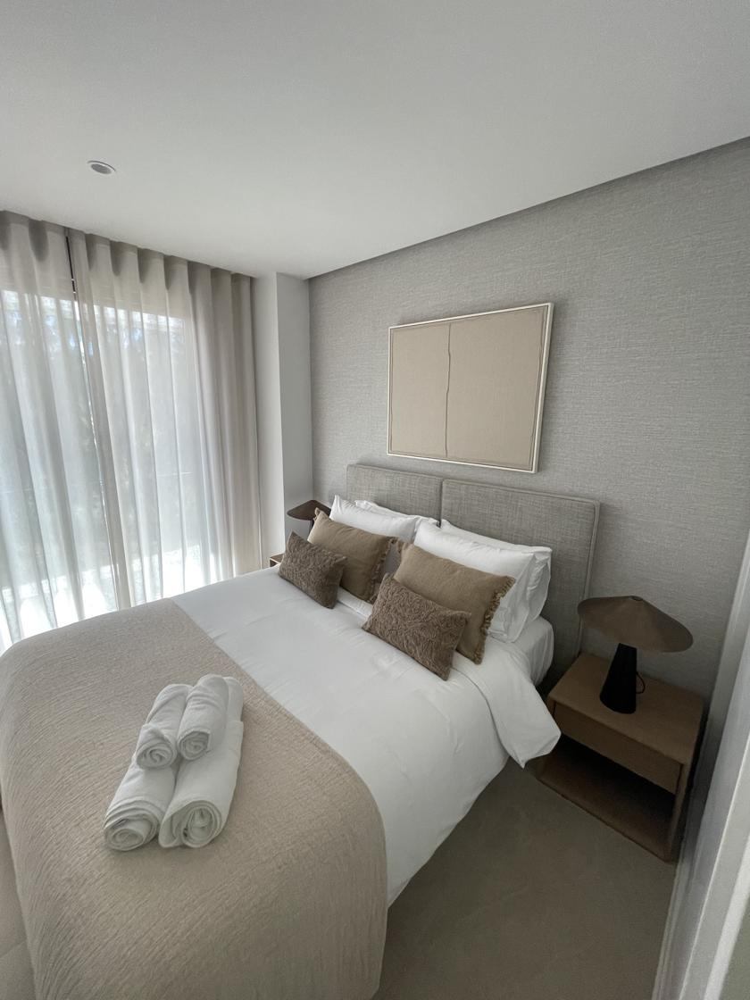
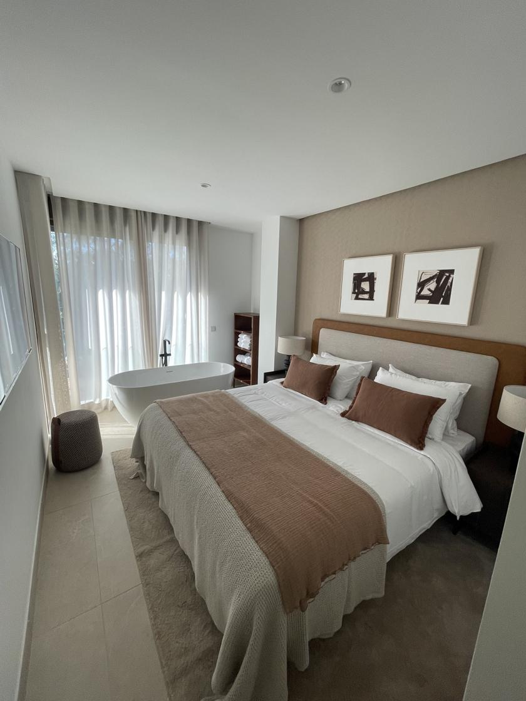
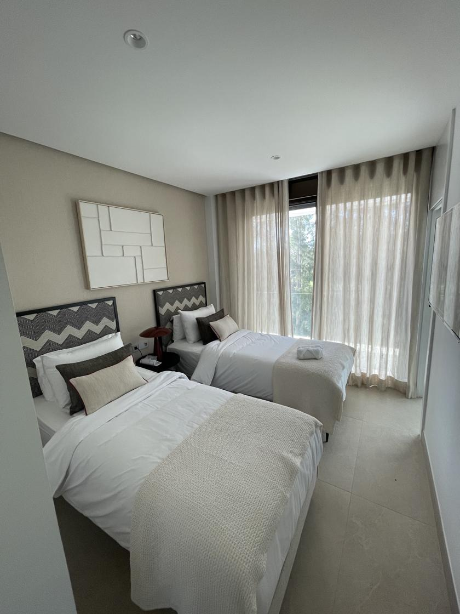
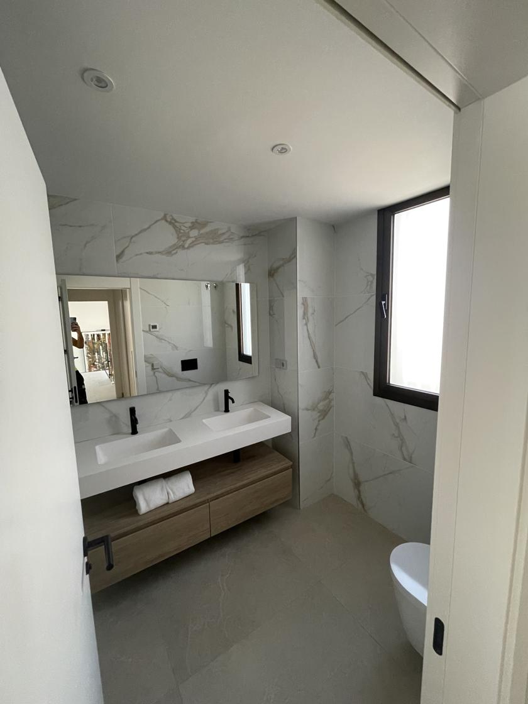

Pintar un piso de
alquiler vacacional
Soy Asis. Llevo desde 2012 pintando en la costa y buena parte de lo que hago son apartamentos turísticos: entrar cuando se va un huésped, dejarlo fino y salir antes de que entre el siguiente. Precio cerrado por escrito, factura, y hablo español, inglés y árabe con el propietario esté donde esté.
Dormitorios y baño terminados




Un piso de alquiler vacacional no se pinta como una casa. En una casa la pared la rozan cuatro personas que la cuidan porque es suya. En un apartamento turístico pasan cincuenta familias al año con maletas, carritos, tablas de surf y niños, y ninguna se para a pensar en tu pared. A los seis meses el pasillo tiene la línea de las maletas, el cabecero está negro de manos y detrás de la puerta hay una marca del pomo.
Eso no se arregla pintando más veces. Se arregla pintando con otro criterio: otro tipo de pintura, otro acabado y unos cuantos detalles en las zonas que se comen todo el desgaste. Te cuento cómo lo hago yo, cuánto cuesta y qué cosas te puedes ahorrar tranquilamente.

Lo que se estropea de verdad en un piso turístico
Después de tantos apartamentos, el patrón se repite en el 90% de los pisos.
La pintura que aguanta el trasiego (y la que no)
Aquí es donde se pierde o se gana el dinero. La pintura plástica mate normal, la barata, es preciosa el primer mes: mata las imperfecciones y queda muy uniforme. El problema es que no se puede frotar. Pasas un paño con agua encima de una mancha y te llevas el color, así que la única forma de limpiar es repintar. En un piso donde tú vives eso da igual. En uno que alquilas cada semana, es un desastre.
Lo que pongo en apartamentos turísticos es plástica lavable de gama alta en mate sedoso o satinado. Se limpia con un paño húmedo sin dejar cerco, aguanta el roce y, sobre todo, permite el repaso puntual: si el próximo inquilino deja una marca, se limpia o se da un toque en esa zona sin tener que repintar la pared entera.
| Zona del apartamento | Lo que pongo | Precio |
|---|---|---|
| Dormitorios y salón | Plástica lavable premium, mate sedoso | 7 – 9 €/m² |
| Pasillo, recibidor y escalera | Lavable premium satinada (aguanta el roce de maletas) | 7 – 9 €/m² |
| Baño y cocina | Pintura antihumedad / antimoho | 6 €/m² |
| Techos | Plástica mate blanca (ahí no roza nadie) | 4 €/m² |
| Puertas y marcos | Lacado con esmalte al agua, sin olor | Desde 90 €/puerta |
| Terraza y exteriores | Pintura exterior con protección UV y sal | 6 €/m² |
Precios orientativos de 2026, material y mano de obra incluidos. El precio cerrado te lo doy por escrito tras ver el piso, y ese es el que se cobra.
El detalle que nadie te cuenta: guárdate medio bote de cada color con la referencia apuntada en la tapa y déjalo en el trastero. Cuando un huésped raye una pared, un repaso de veinte minutos con ese mismo bote te salva la siguiente reserva. Si el color se compró "a ojo" hace tres años, no lo vas a igualar ni de broma y acabas pintando la habitación entera.
Cómo trabajo entre reserva y reserva
Dime la fecha de salida y la de entrada. Yo me encajo dentro.
Me mandas fotos y las fechas por WhatsApp
Con cuatro fotos del pasillo, el salón y los baños ya te adelanto por dónde va el precio y si cabe en tu hueco. Si el piso está lejos, esto ahorra un viaje a los dos.
Visita y precio cerrado por escrito
Voy, mido y te paso el presupuesto con el desglose. Gratis y sin compromiso. Si gestionas varios pisos, te los presupuesto todos en la misma visita.
Entro el día de la salida, no el siguiente
El día que sale el huésped es un día ganado. Protejo suelos y muebles con plásticos, y trabajo con esmaltes al agua para que no huela a disolvente cuando entre el siguiente.
Salgo con el piso montado y limpio
Muebles en su sitio, sin restos ni cinta pegada, y te mando fotos del resultado el mismo día. Si estás fuera de España, con eso ves el trabajo terminado sin moverte.
| Trabajo | Días que necesito | ¿Cabe entre reservas? |
|---|---|---|
| Repaso de pasillo, recibidor y cabeceros | 1 día | Sí, con un hueco de 24 h |
| Apartamento de 1 dormitorio completo | 2 días | Sí, con un hueco de 2 noches |
| Piso de 2-3 dormitorios completo (60-90 m²) | 3 días | Sí, si el piso está vacío |
| Piso completo + lacado de puertas | 4-5 días | Mejor en temporada baja |
| Quitar gotelé y alisar todo el piso | 5-8 días | No: esto es de octubre a marzo |
Si te preocupa el secado entre manos con las prisas, te lo explico con números en la guía de cómo pinto un piso: manos, secado y plazos en secar.
¿Tienes un hueco entre reservas la semana que viene? Mándame las fechas y te digo si entro.
💬 Escribirme por WhatsAppLo que no merece la pena hacer en un piso de alquiler
Prefiero perder un trabajo a que pagues por algo que no te va a devolver ni un euro. Esto es lo que más veces le he quitado de la cabeza a un propietario:
- Pintar el piso entero cada temporada. Si el color aguanta y solo hay marcas en las zonas de paso, un repaso te cuesta un tercio y se ve igual en las fotos. El repintado completo tiene sentido cada tres o cuatro años.
- Colores oscuros o de moda. Un verde botella queda precioso en Instagram y se te come la luz de la habitación, sale mal en las fotos del anuncio y cada repaso se nota. En un piso que alquilas, blancos rotos y arenas suaves: la luz del sur hace el resto.
- Estuco veneciano o microcemento en un piso de alquiler. Son acabados preciosos y los hago, pero en una vivienda por la que pasan cincuenta grupos al año es tirar el dinero: un golpe de maleta en un estuco no se repasa, se rehace.
- Papel pintado en el pasillo. En un salón o un cabecero, bien. En la zona de maletas, la primera esquina levantada te obliga a cambiar el paño entero.
- Alisar el gotelé de todo el piso solo "porque queda mejor". Si el gotelé está sano y bien pintado, el huésped no se fija. Alisa cuando ya vayas a hacer una reforma en serio, no en agosto con la temporada encima.
- Pintar encima de una mancha de humedad. Vuelve. Siempre vuelve, y normalmente en mitad de la temporada. Primero se busca de dónde entra el agua.

Humedad, salitre y pisos cerrados medio año
Un piso de costa que se cierra de noviembre a marzo es un invernadero. Nadie ventila, la humedad ambiente se queda dentro y en enero aparece el moho en las esquinas del techo y detrás del armario. Cuando vuelves en Semana Santa te encuentras el regalo, con la primera reserva ya confirmada.
La solución no es pintar de blanco encima. En los baños y cocinas trabajo con pintura antihumedad y antimoho para baños, y cuando la mancha es de capilaridad o de una filtración de terraza hay que ir a la causa: eso lo explico entero en mi página de reparación de humedades e impermeabilización. Si el piso da al mar, además, el salitre se come la pintura exterior de terrazas y barandillas mucho antes de lo normal, así que ahí siempre va material con protección específica.
Consejo que no me cuesta dinero: si cierras el piso en invierno, deja las puertas interiores abiertas y los armarios entreabiertos. El aire que circula por dentro te evita la mitad del moho.
Si gestionas varias viviendas
Trabajo bastante con propietarios que tienen dos o tres apartamentos y con gestoras que llevan carteras más grandes. Lo que necesitan siempre es lo mismo: que alguien coja el teléfono, dé un precio y cumpla la fecha. Así lo llevo:
- Presupuesto cerrado por escrito antes de empezar, con el desglose por estancia. Lo que te digo es lo que se cobra.
- Factura con IVA a nombre del propietario o de la empresa. Si son varios trabajos del mismo mes, los agrupo en una factura.
- Tres idiomas: español, inglés y árabe. Media costa tiene propietarios que viven fuera. Tratan conmigo directamente, sin intermediario que traduzca ni encarezca.
- Fotos del antes y del después el mismo día. Si estás en Londres o en Ámsterdam, ves el trabajo terminado sin coger un avión.
- Precio mejor por volumen. Si me das tres pisos seguidos en la misma semana y en la misma zona, me ahorro desplazamientos y eso te lo repercuto.
- Precio cerrado por escrito en el trabajo que hago.
Costa de Granada y costa de Málaga
Estas son las zonas donde más apartamentos turísticos pinto.
Nerja
Apartamentos y villas
Ver zona →Almuñécar
Costa tropical
Ver zona →Marbella
Urbanizaciones y áticos
Ver zona →Torremolinos
Alta rotación
Ver zona →Fuengirola
Pisos de temporada
Ver zona →Benalmádena
Apartamentos con vistas
Ver zona →También trabajo en Motril, Salobreña y toda la costa tropical. Y si lo que necesitas es levantar un tabique o cerrar un armario, mira lo que hago con tabiques y falsos techos en la costa de Málaga.
Lo que me preguntan los propietarios
¿Puedes pintar el apartamento entre dos reservas?
Sí, es como trabajo casi siempre en la costa. Si me das la fecha de salida y la de entrada, organizo el trabajo para que quepa dentro. Un repaso general entra en un día, un apartamento de dos habitaciones completo en dos o tres días. Lo que no hago es prometerte 24 horas si la pintura necesita 48: prefiero decírtelo antes que dejarte el piso sin oler a nada.
¿Qué pintura aguanta mejor el trasiego de los inquilinos?
Una plástica lavable de gama alta en mate sedoso o satinado. El mate normal es más barato pero cada roce de maleta se queda marcado y no se puede frotar. La lavable te permite limpiar una mancha con un paño húmedo sin llevarte el color, y eso se traduce en repintar cada tres o cuatro años en vez de cada año.
¿Cuánto cuesta repintar un apartamento turístico completo?
Con lavable premium a 7 – 9 €/m², un apartamento de 60 m² suele salir entre 1.050 y 1.950 €, y uno de 90 m² entre 1.650 y 2.850 €. Un repaso de zonas marcadas, sin pintar el piso entero, arranca en 250-350 €. Voy, lo mido y te doy el precio cerrado por escrito antes de tocar nada.
¿Haces factura para gestoras y propietarios extranjeros?
Siempre. Factura con IVA a nombre del propietario o de la empresa gestora, con el desglose del trabajo. Muchos propietarios se la desgravan como gasto del alquiler, así que la necesitan sí o sí. Si gestionas varias viviendas, puedo agrupar los trabajos del mes en una sola factura.
¿Hablas inglés con los propietarios?
Hablo español, inglés y árabe. En la costa la mitad de los propietarios viven fuera y agradecen tratar directamente conmigo por WhatsApp, mandarme una foto de una pared marcada y recibir el presupuesto en su idioma. Eso ahorra muchas idas y venidas.
¿Merece la pena pintar el piso entero cada temporada?
No, y te lo digo aunque me quite trabajo. Si el color está bien y solo hay marcas en las zonas de paso, con un repaso de pasillo, recibidor y cabeceros vas servido y te ahorras dos tercios del presupuesto. El repintado completo tiene sentido cada tres o cuatro años, o cuando cambias de color o el piso ya se ve cansado en las fotos del anuncio.
¿Preparamos tu apartamento para la temporada?
Mándame cuatro fotos y las fechas del hueco entre reservas. Te digo si entro y cuánto cuesta, gratis y sin compromiso.
Te puede interesar:
Pintar un Piso: Manos y Plazos ·
Pintura Antihumedad para Baños ·
Reparación de Humedades ·
Placas de Yeso en la Costa de Málaga ·
Lacado de Puertas
Costa:
Nerja ·
Almuñécar ·
Marbella ·
Torremolinos ·
Fuengirola ·
Benalmádena
¿Y cuánto me costaría a mí?
Calcula el precio de pintar tu apartamento en 2 minutos — sin compromiso y sin que nadie te llame.
Calcular precio gratis →